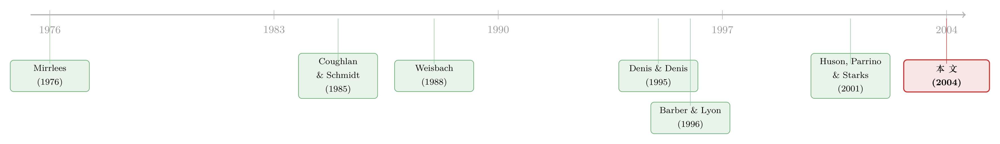

炒掉一个 CEO 之后，公司真的变好了吗——还是只是「运气回来了」
本文读的是 Huson, Malatesta & Parrino (2004, JFE)：用 1971–1994 年间 1,344 起大型上市公司 CEO 更替，作者发现公司的会计业绩在换帅前显著恶化、换帅后显著回升；而且这种回升在「剔除了均值回归」之后依然存在，并且当机构持股更高、董事会由外部董事主导、新 CEO 是外部人时回升更大。换帅公告日的正异常收益，又与日后真实的业绩改善正相关——投资者似乎早就把这件好事算进了价格里。
1 一个所有人都关心、却没人真正回答的问题
先抛一个最朴素的问题：把一个干得不好的 CEO 炒掉，公司之后会变好吗？
这个问题听上去几乎不值得问——换掉差的，当然该变好。可一旦你认真去想，会发现它一点都不简单。
关于「什么时候会换帅」，学界其实早有共识。Warner、Watts 和 Wruck (1988)、Weisbach (1988)、Coughlan 和 Schmidt (1985) 都发现：股票收益差、行业调整后盈利低的公司，更容易更换 CEO。换句话说，董事会确实在盯着业绩、并对差业绩动手。这一头的故事是清楚的。
但另一头——「换帅之后到底怎么样了」——却是一笔糊涂账。
绝大多数证据来自事件研究 (event study)：看换帅公告那几天的股价反应。可这里有个根本性的麻烦：理论本身就给不出明确的预测。你可以说，换帅预示着更好的管理、更高的现金流，于是股价该涨；你也可以说，换帅恰恰说明此前的经营决策已经出了大问题，而投资者原本不知道——于是即便大家相信新人比旧人强，股价照样可能在公告日下跌。
于是事件研究的结论也就五花八门。Bonnier 和 Bruner (1989)、Weisbach (1988) 看到了显著为正的反应；Khanna 和 Poulsen (1995) 却得到了相反的结果；Reinganum (1985)、Warner et al. (1988) 则报告了小而不显著的价格变动。
这里有一个常被忽略的逻辑漏洞：股价反应反映的是投资者对结果的「预期」，而不是结果本身。 哪怕股价在公告日涨了，也只能说明市场相信换帅是好事，并不能证明公司日后真的变好了。要回答最初那个朴素问题，你必须去看换帅之后真实发生的经营业绩。
而直接去看「换帅后会计业绩怎么变」的研究，在这篇论文之前几乎是空白。只有 Hotchkiss (1995) 和 Denis 与 Denis (1995) 做过。
2 真正的拦路虎：是「换帅有用」，还是「运气回来了」？
接着，一个自然的问题是：那就去看换帅前后的会计业绩好了，这有什么难的？
难就难在一个幽灵般的对手——均值回归 (mean reversion)。
想想换帅是怎么触发的：业绩差到一定程度，董事会才动手。那么被换帅的公司，在换帅前几乎按定义就处在一个「业绩低谷」。而业绩里总有一部分是运气：行业冲击、一次性的坏年头。运气是会回归正常的。所以即便董事会什么都不做、CEO 原地不动，这批「低谷公司」的业绩在随后几年也会自己往上爬——纯粹因为坏运气散了。
这正是 Denis 和 Denis (1995) 留下的隐患。他们研究了 1985–1988 年间 908 起更替，发现行业调整后的总资产经营回报率 (operating return on assets, OROA) 在换帅前后确实上升了。但他们用的是未调整和行业调整的 OROA，没法把「换帅带来的真改善」和「均值回归带来的假改善」分开。而且他们的样本期很短，又恰好落在并购最活跃的年代 (Comment 和 Schwert, 1995)，结论能不能推广也成问题。
所以本文真正要解决的，是一个识别问题：如何证明换帅后的业绩回升，不只是均值回归的机械结果？
把这件事讲到底，整篇论文其实就围绕这一个核心展开。
3 一个极简的模型：业绩 = 能力 + 运气
要把问题讲清楚，作者沿用了 Kim (1996) 的设定，给「业绩」做了一个极简的分解。任何一段时间里，公司业绩等于经理人能力加上一个均值为零、序列独立的随机项：
$$ P_{i,t} = q_{i} + \varepsilon_{i,t}, \qquad \mathbb{E}[\varepsilon_{i,t}] = 0 $$
这里 \(q_i\) 是经理人 \(i\) 的（不可观测的）能力，\(\varepsilon_{i,t}\) 是运气。运气序列独立，意味着它是均值回归的：今年特别差，明年期望就回到零。
围绕这个分解，作者对立地摆出两个假说：
改善管理假说 (improved management hypothesis)。 能力 \(q\) 在经理人之间是有差别的。董事会从已实现的业绩里去推断能力；业绩足够差，就推断在任者能力低，于是换上一个期望能力更高的人。这时换帅后业绩会因为两个原因上升：能力增量为正，而且运气也回归正常。
替罪羊假说 (scapegoat hypothesis)。 它建立在 Holmström (1979)、Shavell (1979)、Mirrlees (1976) 的代理模型之上：所有经理人能力一样，差业绩纯粹来自坏运气。董事会明知如此，却必须炒掉差业绩公司的 CEO，否则无法吓住其他人去付出努力。被炒的人，就是不走运的替罪羊。这时换帅后业绩也会上升——但全部来自均值回归，与换帅本身、与能力毫无关系。
两个假说预测了同样的方向（业绩回升），却给出了完全不同的机制。关键的判别式，是把换帅后的期望业绩变化拆成两块：
读懂了这个式子，全文的识别策略就一目了然了：你必须想办法把第二项（均值回归）抠掉，再去看第一项（能力增量）到底是不是零。 如果抠掉均值回归后业绩改善消失，替罪羊假说赢；如果还剩下显著的改善，改善管理假说赢。
4 识别策略：用「业绩对照组」给均值回归记账
但真正关键的一步在于：怎么把那个看不见的均值回归项 \(\mathbb{E}[\varepsilon^{\text{post}}] - \varepsilon^{\text{pre}}\) 估出来、扣掉？
作者的答案是采用 Barber 和 Lyon (1996) 提倡的业绩匹配对照组 (performance-matched control group) 方法。思路朴素得近乎狡猾：
给每一家换帅公司，找一家没有换帅、但换帅前业绩水平相近的对照公司。两家公司站在同一个「业绩低谷」上，按定义经历着同样强度的均值回归。于是把换帅公司的业绩变化，减去对照公司的业绩变化，均值回归就被一笔抵消，剩下的就是换帅本身（即能力增量）带来的那部分。
这一招的妙处在于，它把第二项变成了「两家公司共有、相减即消」的东西。这正是 Denis 和 Denis 没能做到、而本文得以推进的地方。
这其实就是会计业绩版的「反事实」：对照公司回答的是「假如不换帅，一家同样处在低谷的公司会怎样」。它和今天我们熟悉的双重差分 (difference-in-differences, DiD) 精神相通——都是用一个平行的对照对象，把那些「无论如何都会发生」的变化净化掉。
数据上，作者从 Forbes 年度薪酬调查（1971–1995）里识别出所有任职一年及以内的 CEO，据此构造出 1971–1994 年间 1,344 起大型上市公司的 CEO 更替样本，要求在任者和继任者都见于 Forbes、更替被《华尔街日报》报道、Compustat 上有会计数据，且更替不直接源于并购。每一起更替还被人工分类为被迫 (forced) 或自愿 (voluntary)、继任者是内部人还是外部人（在公司任职一年及以内者算外部人）、以及是否伴随外部接管压力。相比 Denis 和 Denis 只覆盖 1985–1988，这个样本期长得多，足以看「不同年代是否不同」。
此外，研究「换帅后业绩改善的决定因素」时还要面对一个隐蔽的陷阱：幸存偏差 (survival bias)——业绩没改善的公司更可能再次换帅、甚至消失，于是留在样本里的本身就被筛选过。作者用 Heckman (1979) 的样本选择模型来纠正这一点。
5 主要结果：均值回归扣掉之后，改善还在
那么，对账的结果如何？
第一，换帅前确实在恶化。 无论是未调整、行业调整还是对照组调整后的 OROA，从换帅前第三年到前第一年都出现了统计显著的下降。董事会盯着差业绩动手，这一点被坐实。
第二，也是全文的命门——把均值回归扣掉之后，改善并没有消失。 对照组调整后的 OROA，从换帅前第一年到换帅后第三年显著上升。这意味着第 3 节那个式子里的第一项 \((q_{\text{new}}-q_{\text{old}})\) 不是零：业绩回升不能全归于均值回归，它实实在在地来自换帅、来自管理质量的提升。 替罪羊假说被这一条直接反驳。
第三，年代有差别。 换帅后的业绩改善在 1983–1994 年间比 1971–1982 年间更大，说明后一时期换帅带来的管理质量增量更高。
第四，谁监督，谁就拿到更大的改善。 横截面上，换帅后 OROA 的改善与机构持股 (institutional shareholdings) 正相关，并且在董事会由外部董事主导、继任 CEO 是外部人时更大。而且外部董事与业绩改善的关系随时间增强——后期的外部董事似乎做出了更好的换帅决策。外部接管压力也有一些（较弱的）正向影响。这与 Borokhovich、Parrino 和 Trapani (1996) 的发现一致：外部董事更愿意炒掉差 CEO、并换上能提升价值的人。
第五，被迫与自愿，没有可靠差别。 这一点略反直觉——人们直觉上以为「强行赶人」会换来更大改善，但数据并不支持被迫与自愿更替在业绩改善上有可靠区别。
第六，市场早就「看懂」了。 换帅公告日的平均异常收益显著为正，而且这个异常收益与日后真实的 OROA 改善显著正相关——即便在控制了上述结构性变量（董事会、持股、继任者来源）之后依然显著。换句话说，投资者用了比这些结构变量更多的信息去预判换帅会带来多大的业绩改善。公告日的那点正收益，不是噪声，而是对未来真改善的理性预期。
（关于「董事会换帅决策好不好、股东又怎么评判」这条线，可参见《炒掉 CEO，董事是英雄还是「帮凶」？——股东用反对票投出了答案》；而 CEO 个人对业绩波动的影响，可参见《老板说了算的公司，业绩为什么忽好忽坏？》。）
6 文献脉络
把这条研究线索拉直来看，会很清楚。
最早的一头是代理理论：Mirrlees (1976)、Holmström (1979)、Shavell (1979) 奠定了「为了诱导努力，必须惩罚差业绩」的逻辑——这正是替罪羊假说的理论根。
接着是「业绩差 → 换帅」的实证共识：Coughlan 和 Schmidt (1985)、Warner et al. (1988)、Weisbach (1988) 反复确认了换帅概率与业绩负相关，并且 Weisbach (1988)、Borokhovich et al. (1996) 进一步指出外部董事更愿意对差 CEO 动手。Kim (1996) 则给出了一个把业绩拆成「能力 + 运气」的简洁模型——本文的理论骨架。
然后，真正把矛头转向「换帅之后怎样」的，是 Hotchkiss (1995)（破产重组样本）和 Denis 与 Denis (1995)（908 起更替）。后者发现业绩回升，却没能排除均值回归。

但真正关键的一步在于方法：Barber 和 Lyon (1996) 提出的业绩匹配对照组，为「净化均值回归」提供了武器。本文 (2004) 把它和更长的样本、Heckman 的幸存偏差校正组合起来，站在了「直接度量换帅后真实业绩改善、并将其归因到治理机制」的位置上。与作者团队的另一篇 Huson、Parrino 和 Starks (2001) 形成姊妹篇：那篇看内部监督机制与换帅概率的长期变化，这篇看换帅之后的业绩后果。
7 评论与延伸（Q&A + 研究方向）
(a) 几个可能的疑问
Q：业绩匹配对照组真的能彻底抠掉均值回归吗？
它抠掉的是「与对照公司共享的那部分均值回归」。但匹配只在换帅前的业绩水平上对齐，若换帅公司与对照公司的业绩回归速度本身不同（比如换帅公司跌得更陡、反弹也更快），残余的均值回归就没被净化干净。Barber 和 Lyon (1996) 正是为缓解这种「设定误差」而设计的，但它是一种缓解，不是根除。
Q：把会计 OROA 当业绩，会不会被盈余管理污染？新 CEO 上任有「洗大澡」的动机。
这是真实顾虑。新任 CEO 常在第一年把坏账、减值一次性计提（把锅甩给前任），人为压低换帅当年的业绩，从而夸大「之后的改善」。论文用的是多年窗口（前一年到后三年）而非单看上任当年，能部分缓解，但无法完全排除应计项操纵带来的机械改善。
Q：被迫与自愿没有差别，是不是说明换帅本身没有「纪律」含义？
不能这么推。一种解释是分类噪声——「自愿」里混着大量「体面退场的被迫」（论文也承认分类靠《华尔街日报》措辞推断，存在误差）。另一种解释是：董事会即便在 CEO 自愿离任时，也会借机挑一个更强的人。两种都会抹平被迫与自愿的差距，而不意味着换帅无关紧要。
Q：公告日正收益与日后业绩改善正相关，会不会只是「好公司什么都好」的内生性？
有可能。能挑出好 CEO 的董事会，本就治理优良，其股价信息含量也更高。论文的贡献在于：即便控制了董事会构成、机构持股、继任者来源这些结构变量，异常收益仍显著——说明市场用了这些变量之外的信息。但这仍是相关性，不能证明股价「导致」了改善。
Q：样本来自 Forbes 薪酬调查、都是大公司，外推性如何？
这是按设计的取舍。好处是这些公司有完整的 Compustat 数据、媒体报道充分、便于人工分类被迫/自愿。代价是结论主要适用于大型上市公司——小公司、私营公司的换帅后果可能很不一样（Hotchkiss 的破产样本就是另一个极端）。
Q：「外部 CEO 改善更大」会不会只是幸存者讲的故事？
正是为此作者上了 Heckman 校正。直觉上，外部 CEO 带来的改善若不达预期，公司更可能再次换帅而退出「单次更替」样本，从而高估外部继任的效果。校正后结论仍然成立，是这条结果可信度的重要支撑。
(b) 几个可能的研究问题与提案
1. 换帅的「债权人视角」。 【经济故事】本文全程站在股东/会计业绩的角度，但换帅同样改变债权人的处境：新 CEO 可能更激进（提高资产波动、损害债权人），也可能更稳健。换帅后信用利差、CDS 利差怎么动？【可行性】中。需要把本文式的更替样本与 TRACE 公司债成交、Markit CDS 对接，用换帅前业绩匹配做对照组。识别上仍受「换帅内生于业绩」困扰，可借公告日事件窗口缓解。（与《股东说了算，债主就要遭殃吗？》的张力相呼应。）
2. 外资机构 vs 本土机构，谁的监督更值钱？ 【经济故事】本文把「机构持股」当成一个整体，发现它与换帅后改善正相关。但机构内部高度异质——外国机构投资者的监督激励与信息劣势并存。换帅后业绩改善，是否随外资持股比例单调变化？【可行性】中。可用 FactSet/13F 拆分机构类型，结合跨国持股数据。识别难点是外资持股的内生选择，可考虑指数纳入（如 MSCI 调整）作为外生冲击。
3. 「业绩匹配对照组」方法本身的稳健性再检验。 【经济故事】本文结论高度依赖 Barber-Lyon 匹配。若改用今天更稳健的设计（交错 DiD 的现代估计量、合成对照），1971–1994 那条「换帅后改善」还在不在？【可行性】高。数据是公开的会计面板，纯方法复刻，doable，且有现实意义——很多旧结论在新估计量下会翻车（参见《当「更稳健」的设计悄悄把符号弄反了——重读交错双重差分》）。
4. 把「能力 vs 运气」的分解直接结构化估计。 【经济故事】第 3 节的式子是言语化的，从未被直接估出 \(q_{\text{new}}-q_{\text{old}}\) 和均值回归项各自的大小。能否用 CEO 固定效应（à la 经理人风格文献）把能力增量从运气里结构性地剥出来？【可行性】中。需要 CEO–公司匹配面板、足够的换帅频次来识别 CEO 固定效应；样本量与「连接性」是主要约束。
5. 公告日异常收益里那块「结构变量之外的信息」到底是什么？ 【经济故事】本文发现市场用了董事会、持股、继任者来源之外的信息来预判改善。这块信息是新 CEO 的个人履历、战略表态，还是分析师解读？【可行性】中。可用换帅公告全文 + 继任者背景数据，配合机器可读的新闻/研报文本，去解释公告日异常收益的残差部分。
我的判断
这篇论文的贡献，落在一个被同行长期忽视的逻辑漏洞上：所有「换帅后业绩回升」的证据，都可能只是均值回归的幻觉，而它第一个用业绩匹配对照组 + 长样本 + 幸存偏差校正，把这层幻觉系统地剥掉，证明回升中确有「真改善」的成分，并把改善的大小映射到了可观测的治理机制（机构持股、外部董事、外部继任者）上。这把一个本来只能靠股价反应间接猜测的问题，变成了可以直接度量、直接归因的问题——在 2004 年是实打实的推进。
对识别，我最大的担心有二。其一是对照组匹配只对齐了业绩水平、没对齐回归动态，残余均值回归无法证伪；其二是会计业绩的盈余管理——新 CEO 的「洗大澡」会从两头放大「先恶化、后改善」的形态，而这恰恰是论文的核心图形。被迫/自愿无差别这一条，也很可能是分类噪声而非真实的「无差别」，作者对此其实留了余地。
后续我最想看到的，是把这套设计搬到信用市场和外资持有人上去——换帅对债权人是福是祸、不同类型机构的监督溢价差多少；以及用今天更稳健的估计量回头复刻这条 1971–1994 的老结论，看它经不经得起方法的更新。换帅之后公司会不会变好，归根结底是「能力增量是否为正」的问题；这篇论文给了一个漂亮的「是」，但那个增量到底有多大、由谁创造，仍是一道值得再算一遍的账。
参考文献
Barber, B.M., Lyon, J.D. (1996). Detecting abnormal operating performance: the empirical power and specification of test statistics. Journal of Financial Economics 41, 359–399.
Borokhovich, K.A., Parrino, R., Trapani, T. (1996). Outside directors and CEO selection. Journal of Financial and Quantitative Analysis 31, 337–355.
Coughlan, A.T., Schmidt, R.M. (1985). Executive compensation, management turnover, and firm performance. Journal of Accounting and Economics 7, 43–66.
Denis, D.J., Denis, D.K. (1995). Firm performance changes following top management dismissals. Journal of Finance 50, 1029–1057.
Heckman, J.J. (1979). Sample selection bias as a specification error. Econometrica 47, 153–161.
Holmström, B. (1979). Moral hazard and observability. The Bell Journal of Economics 10, 74–91.
Hotchkiss, E.S. (1995). Postbankruptcy performance and management turnover. Journal of Finance 50, 3–21.
Huson, M.R., Malatesta, P.H., Parrino, R. (2004). Managerial succession and firm performance. Journal of Financial Economics 74, 237–275.
Huson, M.R., Parrino, R., Starks, L.T. (2001). Internal monitoring mechanisms and CEO turnover: a long-term perspective. Journal of Finance 56, 2265–2297.
Kim, Y. (1996). Long-term firm performance and chief executive turnover: an empirical study of the dynamics. Journal of Law, Economics, and Organization 12, 480–496.
Mirrlees, J.A. (1976). The optimal structure of incentives and authority within an organization. The Bell Journal of Economics 7, 105–131.
Warner, J.B., Watts, R.L., Wruck, K.H. (1988). Stock prices and top management changes. Journal of Financial Economics 20, 461–492.
Weisbach, M.S. (1988). Outside directors and CEO turnover. Journal of Financial Economics 20, 431–460.